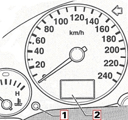

The service indicator must be reset for:
Each oil change service
Each inspection service
There are three possible service types:
Service OIL , service In 01 and service In 02.
If a ” service In 02” is carried out ” service In 02 ” and ” service OIL ” must be reset.
If a ” service In 01” is carried out ” service In 01 ” and ” service OIL ” must be reset.
If a ” service In 01” is carried out without an oil change then only ” service In 01 ” must be reset.
If a ” service OIL” is carried out, only” service OIL ” must be reset.
Reset the display as follows:

Switch off ignition
Press and hold button –1- below the speedometer
Switch on ignition and press wait until four dashes appears on the display –2- (----). Only then the service is reset
Switch off ignition and release button –1- The original mileage (trip recorder) or the next service type will be displayed again after the indicator display has been set.
To reset a further service type, repeat steps, 1 to 4.